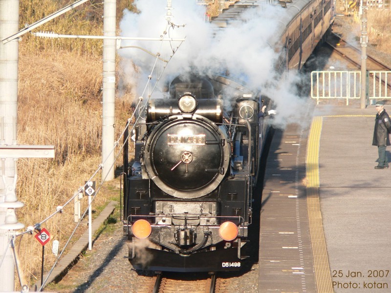
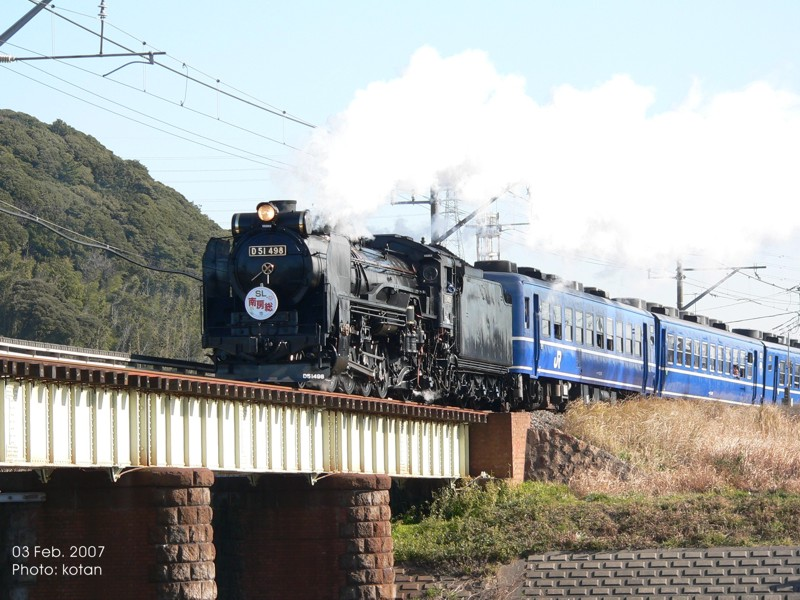

some where in the next town...
D51
Many years have passed since I saw a steam locomotive for the last time.
I saw that steam locomotive near my workshop several days ago.
My workshop is located in near the JR UCHIBO line. The SL ran the Uchibo Line.
It is said that the JR is planning the event which will operate a SL in the Uchibo Line in February.
I saw the locomotive under the trial run.
Fortunately, I was able to take some pictures of it after that. Please see a brave figure.
from the overbridge at the Aohori Station

some more pictures on the day, February 3.

crossing a bridge with sound of the steam locomotive